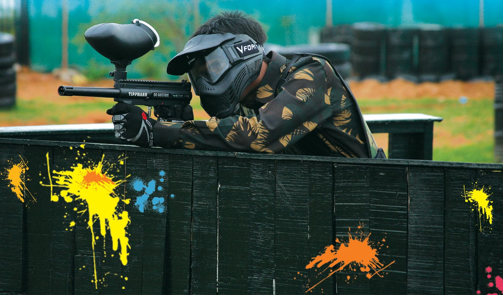

El paintball o gotcha (en español "bola de pintura") es un juego táctico complejo en el que los participantes usan pistolas de paintball, para disparar bolas de pintura contra los integrantes del otro equipo. Los jugadores alcanzados por bolas de pintura son eliminados del juego, ya sea temporal o definitivamente, dependiendo de la modalidad. Contrariamente a lo que se piensa, es uno de las actividades al aire libre más seguras. Las marcadoras, que son accionadas por aire comprimido, CO2 u otros gases, en un comienzo se vendían en los catálogos agrícolas y también podían usarse para marcar árboles.
Normalmente en una partida de paintball se enfrentan dos equipos con el fin de eliminar a todos los jugadores del bando rival o completar un objetivo (como capturar una bandera o eliminar a un jugador concreto). Un juego de paintball típico no profesional suele durar de unos cinco minutos a media hora. El equipo básico necesario para practicar el paintball no es excesivamente caro (aunque sí pueden serlo las marcadoras y demás elementos de gama alta). El número de bolas de pintura disparadas durante una partida varía según la modalidad de juego y de un jugador a otro: algunos disparan cientos, otros unas pocas e incluso algunos no llegan a disparar en todo el juego.
Desde su nacimiento, el paintball ha arrastrado a una multitud de jugadores ocasionales o permanentes. La Sporting Goods Manufacturer's Association estima que aproximadamente 10 millones de estadounidenses juegan anualmente al paintball.
Las partidas de paintball pueden jugarse bajo techo o al aire libre y adoptar diferentes formas, siendo algunas de las más populares el woodsball, el " Milsim" y el torneo o speedball. Las reglas varían ampliamente de una a otra forma, estando diseñadas la mayoría para que los participantes disfruten del juego en un entorno seguro. También es posible jugar en bosques o en zonas naturales.
HISTORIA
El paintball comenzó como un juego de caza entre dos amigos en los bosques de Henniker, Nuevo Hampshire. Originalmente fue bautizado como National Survival Game, pues no era considerado un deporte en esa época. En 1976 Hayes Noel, un corredor de bolsa y su amigo Charles Gaines, un escritor, volvían a casa hablando del reciente viaje de Gaines a África y sus experiencias cazando búfalos. Ansiosos por recrear lo horrible de la matanza de animales, e inspirados por la historia de Richard Connel El juego más peligroso, los dos amigos concibieron la idea de crear un juego donde pudieran acechar y cazarse uno al otro.
En los meses siguientes, los amigos discutieron qué clases de cualidades y características hacían que alguien fuera un buen cazador y supervivencialista. Se quedaron atascados, sin embargo, en cómo idear una prueba de esas habilidades. No fue hasta un año y medio más tarde cuando George Butler, un amigo suyo, les enseñó una marcadora de bolas de pintura en un catálogo agrícola. Era una marcadora Nelspot 007 fabricada por la Nelson Paint Company y era utilizada por los ganaderos para marcar vacas. Noel y Gaines compraron cada uno un marcador y mantuvieron un duelo que se convertiría en la primera partida de paintball. Gaines ganó.
Tras esto, los amigos idearon las reglas básicas del juego basándose en las de capturar la bandera (capture the flag), e invitaron a unos amigos y a un escritor de Sports Illustrated a jugar. Llamaron su juego Survival (‘supervivencia’) y un artículo sobre él fue publicado en el número de junio de 1980 de Sports Illustrated. A medida que crecía el interés por el juego, Gaines y Noel crearon una compañía, National Survival Game, y firmaron un contrato con Nelson Paint Company para convertirse en distribuidor exclusivo de su equipo de paintball.5 Tras esto, licenciaron a franquicias en otros estados el derecho a vender sus marcadoras , pintura y gafas protectoras. Como resultado de su monopolio sobre el equipo, entraron en beneficios en sólo seis meses.
Las primeras partidas de paintball eran muy diferentes a las modernas. Las pistolas Nelspot eran las únicas disponibles. Utilizaban cartuchos de CO2 de 12 gramos, cargaban un máximo de 12 disparos, y tenían que ser amartilladas tras cada tiro. Las máscaras especiales para paintball aún no habían sido creadas, así que los jugadores usaban gafas convencionales que dejaban expuesto el resto de su cara. Las primeras bolas de pintura tenían una base de aceite y por tanto no eran solubles en agua, por lo que las «fiestas de trementina» eran frecuentes tras un día de partida. Las partidas a menudo duraban horas mientras los jugadores se acechaban entre sí, y dado que cada jugador sólo tenía un número limitado de cartuchos, los disparos eran raros.
Entre 1981 y 1983, fabricantes rivales empezaron a crear productos competidores, y fue durante esa época cuando el deporte despegó. La tecnología del paintball se desarrolló gradualmente a medida que los fabricantes agregaban una bomba delantera para hacer el amartillamiento fácil y substituían los cartuchos de 12 gramos por tanques de aire más grandes, comúnmente llamados «aire constante». A estas innovaciones básicas siguieron posteriormente las alimentaciones de gravedad y los codos de 45 grados para facilitar la carga desde la tolva.
REGLAS
A continuación se detallan las reglas más básicas y comunes del paintball. Aunque suele haber poca variación en las reglas de seguridad, los cambios en otras reglas del juego sí son bastante comunes, y los jugadores deben preguntar por las reglas específicas cuando van a jugar.
REGLAS DE SEGURIDAD
Como en muchos otros deportes, la participación segura en una partida de paintball exige el respeto de unas reglas de seguridad. La probabilidad de resultar herido en otros deportes de equipo populares es mucho mayor:
Ajustar bien la máscara para no sufrir heridas al rostro.
Existe un tapón de seguridad, ya que si no tienen el seguro mínimo el tapón detiene la bala.
Tener el seguro puesto antes de empezar a jugar.
Siempre tener la marcadora apuntando hacia abajo.
Respetar distancia o tocar con la marcadora o con la mano al enemigo cerca.
La edad no importa, siempre y cuando estén calibradas las marcadoras
Cuando te disparen una sola vez levantas la marcadora (Claro dependiendo en que tipo de juego estés)
No quitarse la máscara durante el juego, así te hayan marcado.
Al encontrarse a un enemigo cerca es de suma importancia decirle una palabra clave para que sepa que esta rodeado y así evitar discusiones.
MÁSCARA
La regla de seguridad más importante del 'paintball' es que todos los jugadores deben llevar una máscara protectora, normalmente de plástico que cubre toda la cara y se curva sobre las orejas, en todo momento cuando juega o se está cerca de marcadoras sin bloqueo de cañón. Aunque las bolas de pintura no producen heridas permanentes en la mayor parte del cuerpo, los ojos, y en menor medida los oídos, son vulnerables a heridas graves si les impacta una bola de pintura. Las máscaras de paintball se diseñan especialmente para este deporte y son capaces de soportar el impacto directo de una bola de pintura a 90 m/s. Las instalaciones comerciales de paintball y todo deportista exige a los jugadores llevar una máscara específicamente diseñada para este deporte que suele ser de un plástico duro o metal ligero.